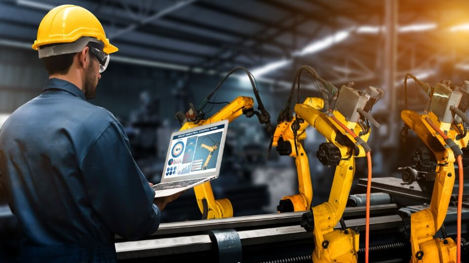

El Ingeniero en Telecomunicaciones puede encargarse de diseñar, implementar y mantener las redes locales (LAN) y las redes de área amplia (WAN) que conectan las computadoras y otros dispositivos dentro de los laboratorios y en toda la universidad.
Aseguran que los laboratorios y otros espacios de la universidad tengan acceso a internet de manera confiable y con la mejor configuración posible.

El Ingeniero Industrial puede encargarse de optimizar los procesos dentro de los laboratorios, asegurando que los recursos (como equipos de cómputo, personal, y materiales) se utilicen de manera eficiente.
Tambien se encarga de mejorar la distribución de los equipos y las áreas dentro de los laboratorios para hacer un uso más eficiente del espacio.

Establecer redes de comunicación para la interconexión de dispositivos, sensores, actuadores, y sistemas de control en fábricas o instalaciones industriales. Esto incluye redes como Ethernet/IP, Profinet, Modbus, entre otras.
El Ingeniero en Redes Industriales se encarga de asegurar los sistemas de control y las redes de comunicación estén completamente integrados, lo que permite un flujo de trabajo fluido y eficiente.